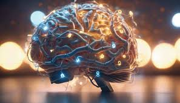

PNG Example
Behold the PNG!!!
Portable Network Graphic (PNG): This file type supports multiple levels of transparency and millions of colors. This format uses lossless compression, supports interlacing (low-res while the file downloads), and overall combines the best properties of both GIF & JPEG. I chose the image because of my interest in IT and it reminds me of artificial intelligence because of the tech intertwined with the image of a brain.